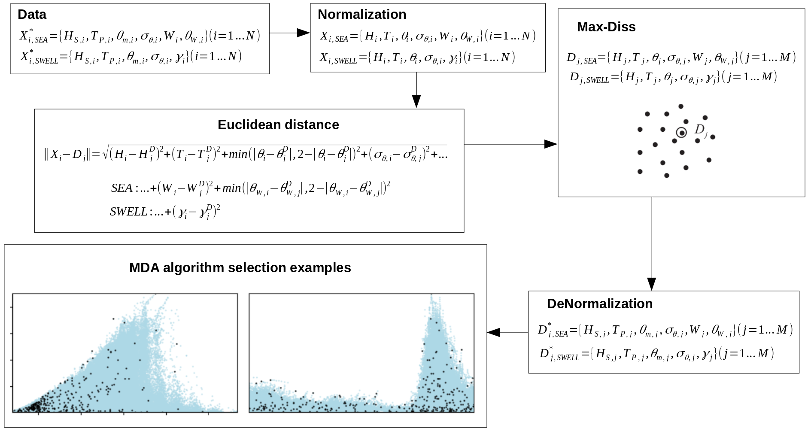

1. Maximum Dissimilarity Algorithm (MDA)¶
Once the wave reanalysis data has been calibrated and validated (refer to the repository CalValWaves for more detailed information in this way), a hybrid downscaling method to shallower water is proposed so a high resolution wave climate in the coast can be obtained all over the world. This resolution depends on two main factors:
The resolution of the bathymetry used, which depends on the data available, as a global bathymetry grid is proportioned by GEBCO and will be used here so it can be extended worldwide, but more detailed grids can be obtained (also shown in this project).
The computational capacity of the machines used (it will make sense in the propagation step).
In this way, the first step to carry out this downscaling method is the selection of the maximum dissimilar cases, so the posterior propagation of the cases can be performed correctly (Javier Tausia, 2020, main directory of the repository). For this purpose, a certain number of windseas and swells is selected from the total set of 40 years so these two type of waves can be more or less represented. The way this selection is performed is described in the image below and in the previously cited work:

This sketch shows the workflow followed in the selection step. The data is firstly normalized for the correct performance of the algorithm, then the euclidean distance is used for the calculation of the distance between the different vectors in the dataset. Finally, the selected data is de-normalized so it can be used and plotted together with the original information.
As it can be seen, the variables used in the definition of the windseas and the swells are different, and it is due to the fact that windseas and swells do not propagate equally and their characteristics are not the same. The variables used are:
where \(H_S\) is the significant wave height, \(T_P\) is the peak period, \(\theta_m\) is the mean wave direction, \(\sigma_\theta\) is the dispersion or cleanliness, \(W\) is the wind magnitude, \(\theta_W\) is the wind direction and \(\gamma\) (jonswap) gives an idea about the shape of the wave spectra.
# import the modules
import sys
import os
import os.path as op
import pandas as pd
import numpy as np
import matplotlib.pyplot as plt
from mda_functions import MaxDiss_Simplified_NoThreshold as MDA
The first thing that is done is the selection of the number of cases that will be selected, worth the redundancy:
num_centroids = 100
Notice that the algorithm will not take too much time even if the number of cases is too large, maybe a few minutes, but when doing the propagations, the computational effort is larger, so be careful. Next, files are loaded and the preprocessing is performed:
p_hind = op.join(os.getcwd(), '..', 'data', 'hindcast')
dataframe_total = pd.read_pickle(op.join(p_hind, 'csiro_dataframe_oahu_sat_corr.pkl'))
# this sat_corr dataframe is the one obtained in CalValWaves, exactly the same!!
# two copies are done for the selection of the seas and the swells
sea = dataframe_total.copy()
swell = dataframe_total.copy()
print(dataframe_total.info())
<class 'pandas.core.frame.DataFrame'>
DatetimeIndex: 362304 entries, 1980-01-01 00:00:00 to 2021-04-30 23:00:00
Data columns (total 29 columns):
# Column Non-Null Count Dtype
--- ------ -------------- -----
0 Hs 362304 non-null float64
1 Tm_01 292920 non-null float32
2 Tm_02 362304 non-null float32
3 Tp 362304 non-null float32
4 DirM 362304 non-null float32
5 DirP 362304 non-null float32
6 Spr 362304 non-null float32
7 Nwp 362304 non-null float32
8 U10 362304 non-null float32
9 V10 362304 non-null float32
10 W 362304 non-null float64
11 DirW 362298 non-null float64
12 Hsea 362304 non-null float64
13 Hswell1 362304 non-null float64
14 Hswell2 362304 non-null float64
15 Hswell3 362304 non-null float64
16 Tpsea 244833 non-null float32
17 Tpswell1 361904 non-null float32
18 Tpswell2 345998 non-null float32
19 Tpswell3 297651 non-null float32
20 Dirsea 244833 non-null float32
21 Dirswell1 361904 non-null float32
22 Dirswell2 345998 non-null float32
23 Dirswell3 297651 non-null float32
24 Sprsea 244833 non-null float32
25 Sprswell1 361904 non-null float32
26 Sprswell2 345998 non-null float32
27 Sprswell3 297651 non-null float32
28 Hs_cal 362304 non-null float64
dtypes: float32(21), float64(8)
memory usage: 53.9 MB
None
For the preprocessing step, two different sets of data must be used:
For the seas, a dataframe with the required variables is obtained.
For the swells, all the different partitions must be joined (3 in this case), and all the variables must be included in this set.
Here, the code might not be touched except the case that more swells exist in the wave reanalysis that wanna be added in the selection of the swells dataset.
# SEA DATAFRAME
xys_sea = ['Hsea', 'Tpsea', 'Dirsea', 'Sprsea', 'W', 'DirW']
sea = sea[xys_sea].dropna(axis=0, how='any')
# limited dispersion threshold so the analysis is coherent
sea['Sprsea'][sea['Sprsea']<5] = 5
# SWELL DATAFRAME
xys_swell = ['Tm_02',
'Hswell1', 'Tpswell1', 'Dirswell1', 'Sprswell1',
'Hswell2', 'Tpswell2', 'Dirswell2', 'Sprswell2',
'Hswell3', 'Tpswell3', 'Dirswell3', 'Sprswell3']
swell = swell[xys_swell]
swell = pd.DataFrame({'Tm_02': np.repeat(swell['Tm_02'], 3),
'Hswell': np.concatenate((swell['Hswell1'].values,
swell['Hswell2'].values,
swell['Hswell3'].values),
axis=0),
'Tpswell': np.concatenate((swell['Tpswell1'].values,
swell['Tpswell2'].values,
swell['Tpswell3'].values),
axis=0),
'Dirswell': np.concatenate((swell['Dirswell1'].values,
swell['Dirswell2'].values,
swell['Dirswell3'].values),
axis=0),
'Sprswell': np.concatenate((swell['Sprswell1'].values,
swell['Sprswell2'].values,
swell['Sprswell3'].values),
axis=0)})
swell = swell.dropna(axis=0, how='any')
# limited dispersion threshold so the analysis is coherent
swell['Sprswell'][swell['Sprswell']<5] = 5
swell['Gamma'] = np.power(swell['Tpswell'].values/\
(swell['Tm_02'].values * 1.411),
-12.5439)
# limited shape of the spectrum threshold so the analysis is coherent
swell['Gamma'][swell['Gamma']<1] = 1
swell['Gamma'][swell['Gamma']>50] = 50
<ipython-input-7-5884f8f5e07d>:31: SettingWithCopyWarning:
A value is trying to be set on a copy of a slice from a DataFrame
See the caveats in the documentation: https://pandas.pydata.org/pandas-docs/stable/user_guide/indexing.html#returning-a-view-versus-a-copy
swell['Gamma'][swell['Gamma']<1] = 1
<ipython-input-7-5884f8f5e07d>:32: SettingWithCopyWarning:
A value is trying to be set on a copy of a slice from a DataFrame
See the caveats in the documentation: https://pandas.pydata.org/pandas-docs/stable/user_guide/indexing.html#returning-a-view-versus-a-copy
swell['Gamma'][swell['Gamma']>50] = 50
data = [sea, swell]
labels = [['Hsea', 'Tpsea', 'Dirsea', 'Sprsea', 'W', 'DirW'],
['Hswell', 'Tpswell', 'Dirswell', 'Sprswell', 'Gamma']]
names = [['$H_S$ [m]', '$T_P$ [s]', '$\u03B8_{m}$ [$\degree$]',
'$\sigma_{\u03B8}$ [$\degree$]', '$W_{speed}$ [m/s]', '$\u03B8_{W}$ [$\degree$]'],
['$H_S$ [m]', '$T_P$ [s]', '$\u03B8_{m}$ [$\degree$]',
'$\sigma_{\u03B8}$ [$\degree$]', '$\gamma$']]
title = ['sea', 'swell']
# input values for the MDA algorithm functions in functions.py
scalars = [[0,1,3,4], [0,1,3,4]]
directionals = [[2,5], [2]]
for wave in range(0,2):
dataframe = data[wave]
xys = labels[wave]
xys_names = names[wave]
scalar = scalars[wave]
directional = directionals[wave]
dataframe = dataframe[xys]
dataarray = dataframe.to_numpy()
# SUBSET
subarray = MDA(dataarray, num_centroids, scalar, directional)
subset = pd.DataFrame(subarray, columns=xys)
# Scatter plot MDA centroids
fig, axs = plt.subplots(len(xys)-1, len(xys)-1, figsize = (20,20))
plt.subplots_adjust(wspace=0.05, hspace=0.05)
plt.suptitle('Scatter plot for the different variables. \n ' +
'All points (black) and MDA points (blue) \n ' +
title[wave].upper(), fontsize=16, fontweight='bold')
for i, item in enumerate(xys):
xys_copy = xys.copy()
xys_names_copy = xys_names.copy()
for p in range(i+1):
xys_copy.pop(0)
xys_names_copy.pop(0)
for j, jtem in enumerate(xys_copy):
axs[i,j+i].scatter(dataframe[jtem], dataframe[item], marker=".",
s=1, color = 'lightblue')
axs[i,j+i].scatter(subset[jtem], subset[item], marker=".",
s=2, color = 'k')
axs[i,j+i].set_xlim(min(dataframe[jtem]), max(dataframe[jtem]))
axs[i,j+i].set_ylim(min(dataframe[item]), max(dataframe[item]))
if i==j+i:
axs[i,j+i].set_xlabel(xys_names_copy[j], fontsize=12,
fontweight='bold')
axs[i,j+i].set_ylabel(xys_names[i], fontsize=12,
fontweight='bold')
else:
axs[i,j+i].set_xticks([])
axs[i,j+i].set_yticks([])
len_xys = len(xys)-len(xys_copy)-1
if len_xys != 0:
for k in range(len_xys):
axs[i,k].axis('off')
# show results
plt.show()
# data is saved in the data/hindcast folder
subset.to_pickle(op.join(p_hind, title[wave] + '_cases_' + str(num_centroids) + '_oahu.pkl'))
MaxDiss waves parameters: 244833 --> 100
MDA centroids: 050/100
Number of centroids computed: 50
MDA centroids: 100/100
Number of centroids computed: 100

MaxDiss waves parameters: 1005553 --> 100
MDA centroids: 050/100
Number of centroids computed: 50
MDA centroids: 100/100
Number of centroids computed: 100